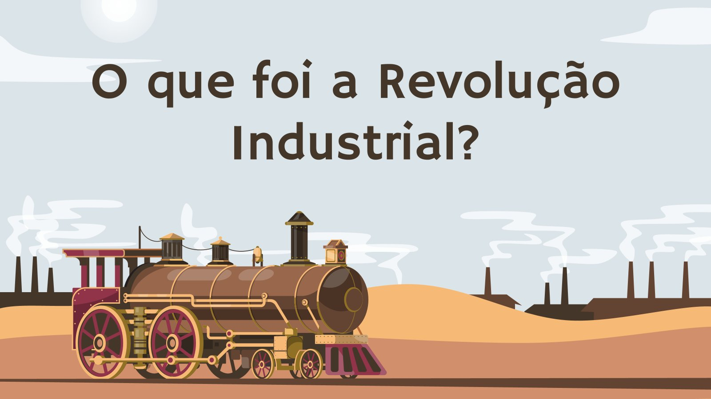
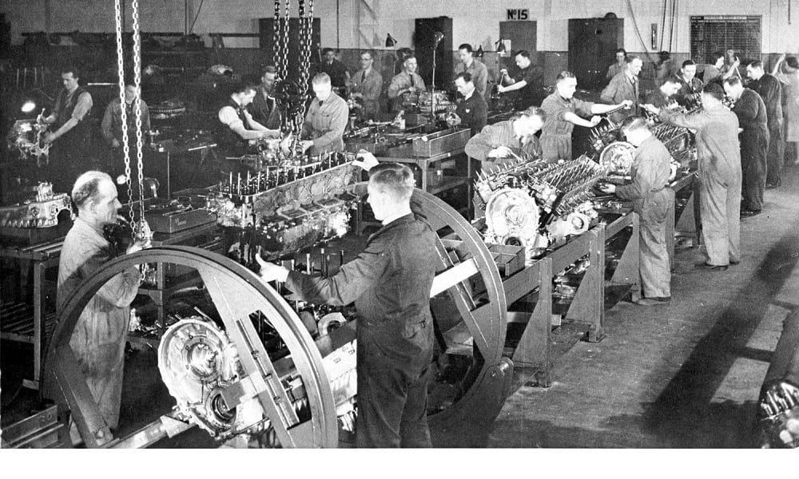
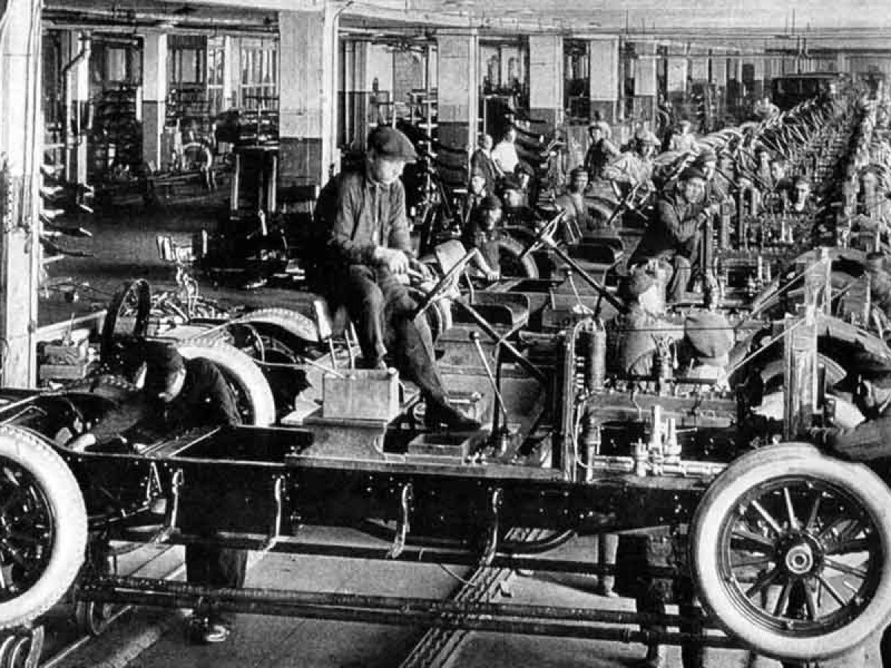
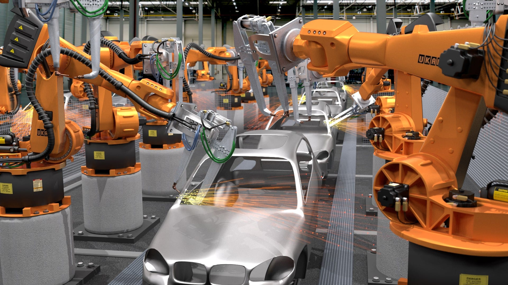
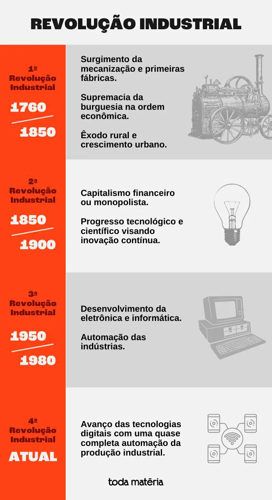

Revolução IndustrialA Revolução Industrial foi um processo de grandes transformações tecnológicas, sociais e econômicas que começou na Inglaterra no século XVIII. O modo de produção industrial se espalhou por grande parte do hemisfério Norte durante todo o século XIX e início do século XX. Produzir mercadorias ficou mais barato e acessível, porém trouxe a desorganização da vida rural e estragos ao meio ambiente. O advento da produção em larga escala mecanizada deu início às transformações dos países da Europa e da América do Norte. Estas nações se transformaram em predominantemente industriais e suas populações se concentraram cada vez mais nas cidades. Por isso, a revolução industrial é caracterizada como o processo que levou à substituição das ferramentas pelas máquinas, da energia humana pela energia motriz e do modo de produção doméstico (ou artesanal) pelo sistema fabril.
A expansão do comércio internacional dos séculos XVI e XVII trouxe um extraordinário aumento da riqueza para a burguesia. Isto permitiu a acumulação de capital capaz de financiar o progresso técnico e o alto custo de instalação das indústrias. A burguesia europeia, fortalecida e enriquecida, passou a investir na elaboração de projetos para aperfeiçoamento das técnicas de produção e na criação de máquinas para a indústria. Logo verificou-se que se obtinha maior produtividade e se aumentavam os lucros quando se empregavam máquinas em grande escala.
A Primeira Revolução Industrial ocorreu em meados do século XVIII e do século XIX. Sua principal característica foi o surgimento da mecanização, que operou significativas transformações em quase todos os setores da vida humana. Na estrutura socioeconômica, fez-se a separação definitiva entre o capital, representado pelos donos dos meios de produção, e o trabalho, representado pelos assalariados. Isto foi gradativamente eliminando as antigas formas de organização dos grêmios ou guildas, que era o modo de produção utilizado pelos artesãos. Desta maneira, surgiram as primeiras fábricas que, num mesmo espaço, abrigavam muitos operários. Cada um deveria operar uma máquina específica para realizar sua tarefa.

Segunda Revolução IndustrialA partir de meados do século XIX, o capitalismo se tornava cada vez menos competitivo e mais monopolista. Apenas poucas empresas ou países dominavam a produção e o comércio. Era a fase do capitalismo financeiro ou monopolista, característica marcante da Segunda Revolução Industrial. Nesta época, o Império Alemão surgiu como uma grande potência industrial. Com a abundância do minério de ferro e uma cultura militar, os alemães, capitaneados pela Prússia, faziam reformas políticas e econômicas que unificaram o país e o dotaram de uma indústria poderosa. Desde então, se estabeleceram as bases do progresso tecnológico e científico, visando a inovação e o constante aperfeiçoamento dos produtos e técnicas para melhorar o desempenho industrial.

Terceira Revolução IndustrialO ponto culminante do desenvolvimento industrial, em termos de tecnologia, teve início em meados do século XX, por volta de 1950, com o desenvolvimento da eletrônica. Esta permitiu o desenvolvimento da informática e a automação das indústrias. Deste modo, as indústrias foram dispensando a mão de obra humana e passaram a depender cada vez mais das máquinas para fabricar seus produtos. O trabalhador intervinha como supervisor ou em apenas algumas etapas da produção. Essa fase de novas descobertas caracterizou a Terceira Revolução Industrial ou revolução informática e tecnológica.

Quarta Revolução IndustrialAlguns estudiosos defendem que estamos vivendo a Quarta Revolução Industrial, que teria seu início com a chegada do século XXI. De acordo com estes pesquisadores, a Quarta Revolução Industrial se caracteriza pelo avanço das tecnologias digitais, com uma quase completa automação da produção industrial. Com o desenvolvimento da coleta e processamento de dados dentro das próprias indústrias, tem sido possível o constante melhoramento da produção. A produção automatizada e a robótica já são realidade em diversos setores produtivos. A massificação da internet revolucionou as telecomunicações, facilitando o compartilhamento de informações e modificando as relações de trabalho, com trabalhadores atuando de forma remota, entre outras transformações.

REFERENCIAS:| https://www.infoescola.com/historia/revolucao-industrial/ |
| https://www.todamateria.com.br/revolucao-industrial/ |
| https://www.somatematica.com.br/emedio/historia/revolucaoindustrial.php |